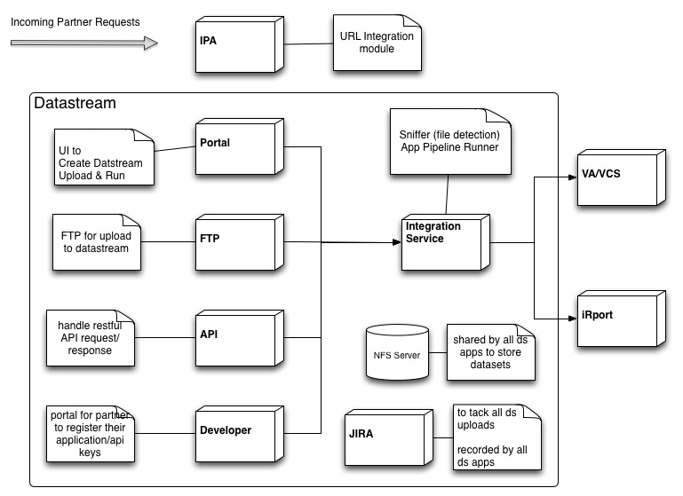
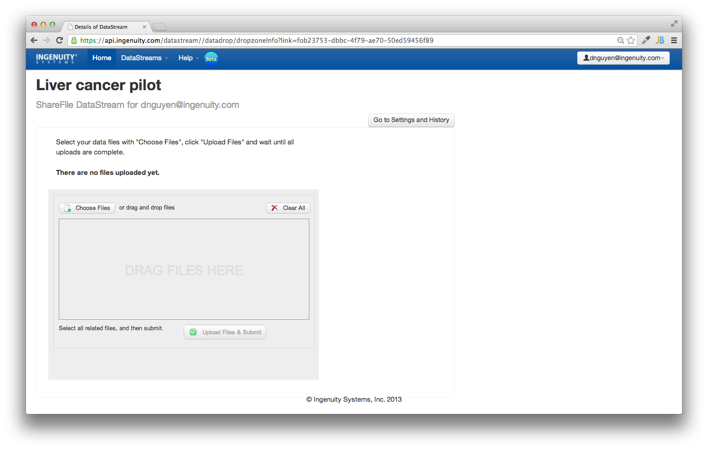

Datastream
Integration
Implementation Notes
Datastream
Goal
Get datasets into Ingenuity's Applications
Integration Types
- Portal Page (simple)
- API (deep)
App Servers
Portal Page
UI front end for getting data in.
Request for file
Send file
Requirements
- User does not need an Ingenuity account
- Initial page should be the landing page not the log in screen
- Use CAPTCHA if user is not authenticated
Landing Page (Unauthenticated)
Landing Page (Authenticated)

How to detect if user is already authenticated?
Spring holds user's authentication info in a thread local variable.
SecurityContextHolder.getContext().getAuthentication();
How to check if already authenticated via SSO?
CAS Gateway https://wiki.jasig.org/display/CASC/CAS+Java+Client+Gateway+Example
No SSO session
SSO session

CAS Gateway Demo
Google reCAPCHA
Usage Guide
https://developers.google.com/recaptcha/intro
- API keys
- Client Side: Displaying the reCAPTCHA Widget (Required)
- Server Side: Verifying the solution (Required)
API keys
# ingenuity.com
recaptcha.publicKey=9feWa9MSCCCCCJjtBRFn0jdlCoUR7h0v9cdfg1xv
recaptcha.privateKey=9feWa9MSKKKKKKGfVO9WZXTil37CtrxDjLXiCFIz
Client Side
<script type="text/javascript"
src="http://www.google.com/recaptcha/api/challenge?k=your_public_key">
</script>
Server Side
http://www.google.com/recaptcha/api/verify
- privatekey
- remoteid
- challenge
- response
Customize
<script type="text/javascript">
var RecaptchaOptions = {
theme : 'clean'
};
</script>
Sharefile
- Use APIs to create Sharefile folders
- Embed UI into portal page
- When upload completes trigger run analysis
Sharefile APIs
Single user account to create share folders for all Portal Page requests
Embedded SF UI
How to customize Sharefile UI
No working solutions from SF developers
SF Customization Strategy
- Edit UI files and host them on Portal server
- Screen scrape SF generated ID a load time
- Use SF internal APIs to send files to AWS
Screen Scraping
Done within the browser using YUI query
Move to the server for easier debugging and logging
Browswer Scraping
function loadHtml5(id) {
var sfurl = "https://ingenuity-it.sharefile.com" +
"/upload-storagecenter.aspx?id=" + id;
var q = "http://query.yahooapis.com/" +
"v1/public/yql?q=" +
"select * from html where url = '" + sfurl +
"'&format=xml&diagnostics=true";
$.ajax({
url: q,
dataType: 'text'
}).done(function(xml) {
var regex = /upOpts = {([^}]+)/;
var opts = xml.match(regex)[1];
var upOpts = (new Function('return ({' + opts + '})'))();
upOpts.redirectURL = '/datastream/api/sharefile/confirm?src=upload&id=' + id;
html5up = new SFHtml5Upload(upOpts);
html5up.init();
});
}
Server Scraping
@RequestMapping(value="/sharefile/content/{id}")
@ResponseBody
public Map doScreenScrape(@PathVariable String id,
HttpServletResponse response) throws
IOException {
response.setContentType("text/plain;charset=UTF-8");
String url = String.format(
"https://ingenuity-it.sharefile.com" +
"/upload-storagecenter.aspx?id=%s", id);
logger.info("parsing url " + url);
String sfPage = getPageContent(url);
Map m = new HashMap();
m.put("html5Opts", parseHtml5Opts(sfPage));
m.put("flashOpts", parseFlashOpts(sfPage));
m.put("standardOpts", parseStandardOpts(sfPage));
return m;
}
End Result
Sharefile upload widget

FTP Server
- Needs to be secure
- Extensible to work with DS model/process
- Reduce user managment cost
- Deployable/Installer compatible bundle
Apache MINA
Apache MINA is a network application framework which helps users develop high performance and high scalability network applications easily.
Apache FtpServer
A FTP server built on top of the MINA APIs
How to make FTP upload secure?
Add Transport Layer Security (TLS)/Secure Socket Layer (SSL)
Needs to encrypt both:
- control channel
- data channel
Ingenuity CA certificate
Put in Java Key Store with file access and password protected
keytool -import -trustcacerts -alias ftp://ftp.ingenuity.com -file Ingenuity.crt -keystore ftpserver.jks
Configure Apache FTP Server to use SSL
SslConfigurationFactory ssl = new SslConfigurationFactory();
ssl.setKeystoreFile(jks);
ssl.setKeystorePassword(keyStorePassword);
listenerFactory.setSslConfiguration(ssl.createSslConfiguration());
listenerFactory.setImplicitSsl(false);
Force user to not send password in clear text. Also make sure uploaded data file is being encrypted
// is this a secure control connection?
String command = request.getCommand().toUpperCase();
if ("USER".equals(command)) {
if (!session.isSecure()) {
session.write(new DefaultFtpReply(
FtpReply.REPLY_550_REQUESTED_ACTION_NOT_TAKEN,
"TLS/SSL control connection required."));
return FtpletResult.SKIP;
}
}
// is this a secure data connection?
// commands like: APPE, LIST, MLSD, NLST, RETR, STOR, STOU
if (DATA_CHANNEL_CONNECTIONS.contains(command)) {
if (!session.isSecure()) {
session.write(new DefaultFtpReply(
FtpReply.REPLY_550_REQUESTED_ACTION_NOT_TAKEN,
"TLS/SSL data connection required."));
return FtpletResult.SKIP;
}
}
Extending FTP validations
- User can only upload to datastream created folders
- Destination must belong to the user
- Modifcation only within the Datastream folder
How to maintain users?
Use existing Ingenuity user accounts
Integrate with IMS
Implement Apache UserManager interface
How to authenticate username/password?
Not possible to redirect to SSO
Delegate to IMS AuthenticationHandler service
How to make it Installer compatible
Maven assembly generating installer directory structure
tree datastream_ftp-1.2.220818
├── README.md
├── bin
│ └── datastream_ftp.sh
├── classes
│ ├── datastream_ftp-config.properties
│ ├── datastream_ftp.xml
│ ├── log4j.properties
│ ├── rosetta.properties
├── datastream_ftp-1.2.220818.jar
├── lib
└── setup
├── build.spec
├── datastream_ftp.xml
├── deployment.datastream_ftp.setup
├── deployment.datastream_ftp.spec
├── deployment.datastream_ftp.spec.register
├── deployment.datastream_ftp.spec.stats
├── deployment.spec -> /usr/local/ingenuity/datastream_ftp/datastream_ftp-1.2.220818/setup/deployment.datastream_ftp.spec
└── plugin
├── cfquery.pl
└── monitor.sh
Rest API
- Secure
- Grants/Access at the application level not at the user level
- Follow restful API best practices guidelines
- discoverable, backward compatible, extendsible
OAuth2 client_credentials flow
- generate api key and secret for each application
- implement key and secret repository
- Use IMS TokenService for generating access_token
- token scope/context
- configurable expiry
- centralize and available to all application to validate token
Spring MVC
And others
- lombok
- Jackson, JAXB 2
- MockMVC for testing controllers
How to avoid redirecting to the log in page?
Use a different authentication filter chain for /api/** The chain will stop if api key can not be authenticated and reuturn 401 access denied
The same can be use for AJAX requests. Extend CasProcessFilterEntryPoint
HttpServletRequest request = (HttpServletRequest) servletRequest;
HttpServletResponse response = (HttpServletResponse) servletResponse;
if ("XMLHttpRequest".equals(request.getHeader("X-Requested-With")) {
response.setStatus(HttpServletResponse.SC_UNAUTHORIZED);
return;
}
WebConfig
@Configuration
@EnableWebMvc
public class WebConfig{
//
}
@EnableWebMvc will register default JSON and XML converters if Jackson and JAXB 2 exists in the classpath
Controller
@Controller
@RequestMapping( value = "/v1/datapackages" )
public class DataUploadController {
@Autowired
private DataPackageService dataPackageService;
@RequestMapping(value="/{dataPackageId}")
@ResponseBody
public DataPackage retrieveDataPackageInfo(
@PathVariable("dataPackageId") String dataPackageId,
HttpServletResponse response) throws Exception {
return dataPackage;
}
}
Exception Handling
How to Catch all errors and don't return stack traces?
@ControllerAdvice
public class RestResponseEntityExceptionHandler
extends ResponseEntityExceptionHandler {
@ExceptionHandler(value = {
IllegalArgumentException.class,
IllegalStateException.class
})
protected ResponseEntity<Object> handleConflict(
RuntimeException ex,
WebRequest request) {
String bodyOfResponse = "This should be application specific";
return handleExceptionInternal(ex, bodyOfResponse,
new HttpHeaders(), HttpStatus.CONFLICT, request);
}
}
How to test controllers?
@RunWith(SpringJUnit4ClassRunner.class)
@ContextConfiguration(classes = {ActivationControllerTestContextMock.class, ActivationControllerTestContext.class})
@WebAppConfiguration
public class ActivationControllerTest {
@Resource(name = "activationDAO")
ActivationDAO activationDAOMock;
@Resource(name = "variantAnalysisApi")
VariantAnalysisApi variantAnalysisApiMock;
private MockMvc mockMvc;
@Autowired
WebApplicationContext webApplicationContext;
@Before
public void setUp() {
Mockito.reset(activationDAOMock);
Mockito.reset(variantAnalysisApiMock);
mockMvc = MockMvcBuilders.webAppContextSetup(webApplicationContext).build();
}
}
@Test
public void validateWithActivationCodeShouldReturnStatusOk() throws Exception {
String activationId = "07cba26b-3916-43ba-9ac5-b07b7504d23a-126";
String sampleId = UUID.randomUUID().toString();
String activationCode = "LabTest001";
List<ActivationCode> codes = new ArrayList<ActivationCode>();
codes.add(new ActivationCode(sampleId, activationCode));
Activation activation = new ActivationBuilder().id(activationId)
.activationCodes(codes).build();
when(activationDAOMock.fetch(activationId)).thenReturn(activation);
MvcResult mvcResult = mockMvc.perform(get("/v1/activations/"
+ activationId + "/validate")
.contentType(MediaType.APPLICATION_JSON)
)
.andExpect(status().isOk())
.andExpect(jsonPath("$.activation.activationCodes[0].sampleId",
is(sampleId)))
.andReturn();
}
Common Rest responses like Pagination
- Link HTTP header with “next“, “prev“, “first” and “last” link relation types.
- Use Spring publish/subscribe model
- Controller will fire PaginatedResultsRetrievedEvent
- Common listener will write out Link headers
Controller Publish
@RequestMapping(
value = "/datapackages",
params = { "page", "size" },
method = GET
)
@ResponseBody
public List<DataPackage> findPaginated(
@RequestParam("page") int page, @RequestParam( "size" ) int size,
UriComponentsBuilder uriBuilder, HttpServletResponse response ){
Page<DataPackaage> resultPage = service.findPaginated(page, size);
if( page > resultPage.getTotalPages() ){
throw new ResourceNotFoundException();
}
eventPublisher.publishEvent(
new PaginatedResultsRetrievedEvent<DataPacakge>(
DataPackage.class, uriBuilder, response, page,
resultPage.getTotalPages(), size ) );
return resultPage.getContent();
}
Developer
- Self service portal for developers
- Register appId and appSecret
- Getting Started Documentation
- API Usage Sandbox
Applications
- Beta DS
- Beta VA/VCS
- Beta iReport
Documentation
- Getting Started
-
Sample Code
- https://github.com/dannyduc/ingenuity-sample-client-api
- https://github.com/dannyduc/ir-va-purchase
- https://github.com/dannyduc/parse-json-map
- https://github.com/dannyduc/lc-sample-batch-client
- https://gist.github.com/dannyduc/6250195
- https://gist.github.com/dannyduc/6247382
- https://gist.github.com/dannyduc/cbcb85d11dc06ed37df6
- ISA-TAB (NYI)
- Error Message (NYI)
- FAQ (Need to collect past emails and write one)
- License Agreement (NYI)
Issues with curl sample code
- I can run it from the command line but not in Java (Fixed)
- Unknown SSL protocol error in connection to developer.ingenuity.com:443
- curl: (60) Peer certificate cannot be authenticated with known CA certificates
Integration Service
- Detects file types (Sniffer)
- Submits the pipeline task to VA or iReport
Provides the common interface to execute all Ingenuity's Applicaiton APIs. Each pipeline maps to an Ingenuity application
Shared NFS
dataPackages are stored on a centralize file system
Files written out to NFS can not always be read immediately after
How to handle this?
Add a @Retry annotation in DataPackage load method
@Retry(
strategy = RetryStrategyEnum.MAX,
backOff = BackOffStrategyEnum.FIXED
)
public DataPackageMetadata loadMetadata(String dataPackageId) {
return loadFromNFS(getPath(dataPacakgeId));
}
JIRA
All customer requests are tracked in JIRA
JIRA REST APIs
- Create
- Update
- Reassign
- Close
IPA
IPA provides integration URL for users to upload datasets, run analysis, and launch pathway viewer
Merck Issue
IPA API was working in their internal MIPA system but after the migration to IPA production, upload was beginning to fail.
“This API worked OK for MIPA but timing issues have more or less broken this upload capability in the external IPA host.”
Got sample code from Merck
- Perl script to generate html file
- Launch file in browser to submit to IPA
Reproduce in Ingenuity
- 4MB file but when loaded in Safari 6GB is consumed. No data sent to IPA
- Chrome took about 3-5 min. and memory usage rise to 100MB. Failed error logs in IPA
Ingenuity Solution
Java program to parse html file and submit to IPA
- Use Tika to parse HTML
- Parse INGSSO page to initiate SSO
- execute /pa/api/v2/dataanalysis API
TODO
In addition to username/password the IPA API requires the user to specify their applicationName
Is it possible to link user name to multiple applications and appKey/appSecret?
Maybe move to the DS appKey/appSecret model
VA/VCS
API Usage Model
VA APIs requires username/password authentication. Since the datastream does not store or has access to user's password, we use the following as a workaround
-
Authenticate each VA API call with a dedicated user datastream@ingenuity.com
- Since VA enforces single concurrent session usage, datastream user account is assigned a Concurrent License with no max usage count
- DS API Upload: For sample upload and analysis run the datastream user will do a VA "share copy" to the destination user account
- DS Portal Upload: For sample upload and analysis run the datastream user will a VA "share" to the destination user account
- DS Export: The datastream user will call the VA export API to export the user's analysis by passing the user's analysisId
- DS Activation: The datastream user will call VA activate API to activate the user's sample by passing user's sampleId
Is it possible to remove the need for a datastream admin user?
CAS Proxy Granting Ticket
https://confluence.ingenuity.com/display/IMS/CAS+Proxy+Granting+Ticket
// obtain ticket to execute va services
String service = "https://variants.ingenuity.com/va/j_spring_cas_security_check";
String ticket = UserContext.getProxyTicketFor(service);
// create a va session
HttpClient client= new DefaultHttpClient();
HttpHead headRequest = new HttpHead(service + "?ticket=" + ticket);
HttpResponse response = client.execute(headRequest);
// execute a va service request as the current logged user
HttpGet getRequest = new HttpGet("https://variants.ingenuity.com/va/r/DataSetService/sample/123");
response = client.execute(getRequest);
Sample Code
http://svn.ingenuity.com:8081/repos/trunk/ing/ims_component/ingsecurity/ingsecurity-api/src/main/webapp/protected/protected.jspOccasional errors when getting analysis status from VA
@Retry
public String getResponseFromGetMethod (String url, Header header)
throws IOException {
GetMethod m = new GetMethod (url);
if (header != null) {
m.addRequestHeader(header);
}
client.executeMethod(m);
String responseBody = getResponseBody(m);
m.releaseConnection();
if (logger.isDebugEnabled()) {
logger.debug(m.getURI());
logger.debug(responseBody);
}
return responseBody;
}
Oct 2 16:44:17 ipapiapp2 [appname:datastream_integration] 44:17 [pool-1-thread-3] WARN (com.ingenuity.datastream_integration.va.retry.impl.DefaultRetryExecutor:executeTask:25) - Caught exception, retrying... tryNo: 0
iReport
DS uses SDM service to run and assign report to the target users
com.healthmarketscience.rmiio
Since model objects in Stats Pipeline can get pretty large, Spring streaming remote method invocation was implemented. Code copied from IKRS
Is it possible to authenticate as non authenticated user?
SAML2 IdP using Ingenuity certificate on DS follow by CAS PGT
SamlMsg msg = samlLoginService.login(ssoAssertionUrl, dsServiceUrl);
java.util.List<NameValuePair> nameValuePairs = new ArrayList<NameValuePair>();
nameValuePairs.add(new BasicNameValuePair("RelayState", msg.getRelayState()));
nameValuePairs.add(new BasicNameValuePair("SAMLResponse", msg.getSamlResponse()));
HttpPost httpPost = new HttpPost(msg.getSamlPostUrl());
httpPost.setEntity(new UrlEncodedFormEntity(nameValuePairs));
HttpResponse response = httpClient.execute(httpPost);
HttpEntity entity = response.getEntity();
EntityUtils.consume(entity);
PGT request same as beflore
VA Slide 11-4